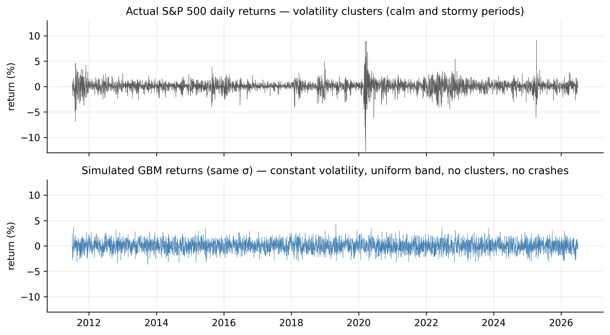
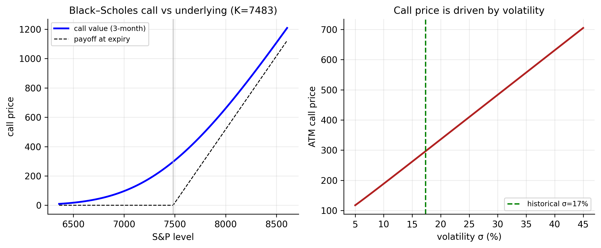

13 Continuous-Time Models
Every model so far has been discrete: one observation per trading day. But the theory that underpins modern finance — above all option pricing — is written in continuous time, where prices move over infinitesimal instants \(dt\). This chapter builds that framework: the stochastic processes (Brownian motion, Itô), the Geometric Brownian Motion (GBM) model of prices, and the Black–Scholes option-pricing formulas. Then it does what the rest of the book has trained us to do — holds the elegant theory against our six tickers and the option chains of Chapter 12, and sees where it breaks.
The punchline is worth stating first. GBM rests on two assumptions — volatility is constant and log returns are normal — and those are exactly the two our data demolished: volatility clusters (Chapters 8–10) and returns are fat-tailed (Chapter 2). So this chapter is both the theoretical foundation and a full-circle account of why the empirical models were necessary.
13.1 Some continuous-time stochastic processes
13.1.1 The Wiener process (Brownian motion)
The building block is the Wiener process (standard Brownian motion) \(W_t\) — the continuous-time limit of a random walk. Its defining property concerns the increment over a tiny interval \(dt\):
\[ dW_t \sim N(0,\, dt), \qquad W_T - W_0 \sim N(0,\, T). \tag{13.1}\]
Two features matter: the variance of the increment is proportional to time (so the standard deviation scales like \(\sqrt{dt}\) — the “square-root-of-time” rule for volatility), and increments over non-overlapping intervals are independent. A Wiener process is continuous but nowhere smooth — it wanders like a price.
13.1.2 Generalized Wiener process
Pure Brownian motion has zero drift and unit variance rate. A generalized Wiener process adds a constant drift \(a\) and scales the noise by a constant \(b\):
\[ dx_t = a\, dt + b\, dW_t . \tag{13.2}\]
Over an interval \(T\), \(x\) changes by \(aT\) on average with standard deviation \(b\sqrt{T}\): a deterministic trend plus Brownian noise. This is the continuous-time cousin of the random-walk-with-drift from Chapter 6.
13.1.3 Itô process and Itô’s lemma
Allowing the drift and volatility to depend on the current state gives an Itô process,
\[ dx_t = a(x_t,t)\, dt + b(x_t,t)\, dW_t . \tag{13.3}\]
The tool for working with functions of such a process is Itô’s lemma — the continuous-time chain rule, with one extra term. For a smooth \(G(x,t)\),
\[ dG = \Bigl(G_x\, a + G_t + \tfrac{1}{2} G_{xx}\, b^2\Bigr) dt + G_x\, b\, dW_t . \tag{13.4}\]
The extra \(\tfrac{1}{2}G_{xx}b^2\) term — absent from ordinary calculus — is the signature of Itô’s lemma, and it produces the famous “\(-\sigma^2/2\)” correction below.
13.2 Geometric Brownian Motion: the model of prices
Geometric Brownian Motion (GBM) is the standard continuous-time model of a price: its proportional changes are Brownian, which makes the price lognormal and log returns normal with constant volatility.
The standard continuous-time model for a price \(P_t\) is Geometric Brownian Motion: the proportional change is a generalized Wiener process,
\[ \frac{dP_t}{P_t} = \mu\, dt + \sigma\, dW_t . \tag{13.5}\]
Here \(\mu\) is the expected annual drift and \(\sigma\) the annual volatility. Applying Itô’s lemma with \(G = \ln P\) gives the log price:
\[ d\ln P_t = \Bigl(\mu - \tfrac{1}{2}\sigma^2\Bigr) dt + \sigma\, dW_t, \tag{13.6}\]
so the log price is a random walk with drift — the continuous-time form of the \(I(1)\) result of Chapter 6 — and the log return over \(T\) is normal:
\[ \ln\frac{P_T}{P_0} \sim N\!\Bigl((\mu - \tfrac{1}{2}\sigma^2)T,\;\; \sigma^2 T\Bigr). \tag{13.7}\]
Prices are therefore lognormal, and daily log returns are independent, normal, with constant volatility \(\sigma\). Estimating the two parameters is direct: \(\hat\sigma = s_{\text{daily}}\sqrt{252}\) and \(\hat\mu = \bar r_{\text{daily}}\cdot 252 + \tfrac12\hat\sigma^2\).
gbm_params <- function(sym) {
d <- read.csv(sprintf("data/%s.csv", sym)); d$Date <- as.Date(d$Date)
r <- diff(log(d$Adjusted[d$Date <= as.Date("2026-07-01")]))
c(sigma = sd(r)*sqrt(252), mu = mean(r)*252 + 0.5*(sd(r)*sqrt(252))^2)
}
sapply(c("AAPL","MSFT","AMZN","SPX","GLD","GCF"), gbm_params)import pandas as pd, numpy as np
def gbm_params(sym):
d = pd.read_csv(f"data/{sym}.csv", parse_dates=["Date"]).set_index("Date")
r = np.log(d[d.index <= "2026-07-01"]["Adjusted"]).diff().dropna()
sigma = r.std(ddof=1)*np.sqrt(252)
return sigma, r.mean()*252 + 0.5*sigma**2
for s in ["AAPL","MSFT","AMZN","SPX","GLD","GCF"]: print(s, gbm_params(s))| Ticker | last price | volatility \(\hat\sigma\) | drift \(\hat\mu\) |
|---|---|---|---|
| AAPL | 294.38 | 28.4% | 26.5% |
| MSFT | 384.28 | 26.2% | 23.2% |
| AMZN | 241.70 | 32.8% | 26.4% |
| SPX | 7483.23 | 17.4% | 13.0% |
| GLD | 370.60 | 16.8% | 7.7% |
| GCF | 4068.30 | 17.3% | 8.6% |
13.3 Distributions of stock prices and log returns
Exponentiating Equation 13.7, the price is lognormal — right-skewed and bounded below by zero (the model respects limited liability). Its first two moments are
\[ E[P_T] = P_0\, e^{\mu T}, \qquad \operatorname{Var}(P_T) = P_0^2\, e^{2\mu T}\bigl(e^{\sigma^2 T} - 1\bigr), \tag{13.8}\]
while its median is \(P_0\, e^{(\mu - \sigma^2/2)T}\). The mean sits above the median — the signature of right skew — because a few large upward moves drag the average above the typical outcome. For the S&P one year out (spot \(7483\), \(\hat\mu = 13\%\), \(\hat\sigma = 17.4\%\)): the mean is \(8523\), the median \(8395\), and the 90% range \([6310,\ 11170]\) — a \(\pm25\%\)-ish band, the uncertainty dwarfing the drift.
13.4 Where GBM meets our data — and breaks
GBM claims constant volatility and normality. Both fail, and we have already proved it.
Constant volatility fails. Figure 13.1 simulates GBM returns with the S&P’s \(\sigma\) beside the real ones. The simulation is a featureless, uniform band; reality clusters — calm stretches and violent ones, the 2020 crash towering over everything. Capturing that is exactly what ARCH and GARCH did (the discrete-time version of stochastic volatility).

Normality fails in the tails. Under GBM a large daily move is essentially impossible, yet every series has crash days that are enormous in \(\sigma\) units:
| Ticker | worst day | size under GBM | GBM probability |
|---|---|---|---|
| AAPL | −13.8% | −7.7σ | ~1 in 100 trillion |
| MSFT | −15.9% | −9.6σ | ~1 in \(10^{21}\) |
| AMZN | −15.1% | −7.3σ | ~1 in 4 trillion |
| SPX | −12.8% | −11.7σ | ~1 in \(10^{31}\) |
| GLD | −10.8% | −10.2σ | ~1 in \(10^{24}\) |
| GCF | −12.1% | −11.1σ | ~1 in \(10^{28}\) |
The S&P’s worst day is an \(11.7\sigma\) event whose GBM probability has thirty zeros after the decimal — it should never occur, yet it did. The continuous-time fix is a jump-diffusion model (Section 13.7).
13.5 The Black–Scholes differential equation
The Black–Scholes formula is not assumed — it is derived from a no-arbitrage argument. The idea: an option \(f(S,t)\) can be perfectly hedged by holding \(\partial f/\partial S\) shares of the stock (delta hedging), and since the hedged portfolio is riskless, it must earn the risk-free rate \(r\). That single condition yields the Black–Scholes partial differential equation:
\[ f_t + rS\, f_S + \tfrac{1}{2}\sigma^2 S^2 f_{SS} = r f . \tag{13.9}\]
The striking feature is what is absent: the drift \(\mu\). Because the hedge removes all the risk, the fair price cannot depend on the stock’s expected return — only on its volatility. The full step-by-step derivation is given in the appendix; the important consequence is developed next.
13.6 Black–Scholes pricing formulas
13.6.1 A risk-neutral world
That \(\mu\) vanishes from Equation 13.9 is the gateway to the most powerful idea in derivatives pricing: risk-neutral valuation. Since the price does not depend on the real-world drift, we may compute it as if every asset drifted at the risk-free rate \(r\) — a fictitious “risk-neutral world.” In that world an option is worth the discounted expected value of its payoff:
\[ C = e^{-rT}\, E^{\mathbb{Q}}\!\bigl[\max(S_T - K,\ 0)\bigr], \tag{13.10}\]
where the expectation \(\mathbb{Q}\) uses drift \(r\) in place of \(\mu\). This is not a claim that investors are risk-neutral; it is a computational device justified by the hedging argument. Optimists and pessimists, who disagree about \(\mu\), must still agree on the option’s price — because the hedge makes \(\mu\) irrelevant. Evaluating Equation 13.10 under the lognormal law gives the formulas.
13.6.2 The formulas
For a European call (right to buy at \(K\) after time \(T\)):
\[ C = S\,N(d_1) - K e^{-rT} N(d_2), \tag{13.11}\]
\[ d_1 = \frac{\ln(S/K) + (r + \tfrac12\sigma^2)\,T}{\sigma\sqrt{T}}, \qquad d_2 = d_1 - \sigma\sqrt{T}, \tag{13.12}\]
with \(N(\cdot)\) the standard normal CDF. The put follows from put–call parity, \(C - P = S - K e^{-rT}\):
\[ P = K e^{-rT} N(-d_2) - S\,N(-d_1). \tag{13.13}\]
Applied to the S&P (spot \(S=7483\), ATM \(K=7483\), \(r=4\%\), \(T=3\) months, \(\hat\sigma=17.4\%\)): a call worth 297 index points (\(4\%\) of spot) and a put worth 222, with parity exact (\(297-222 = 74.7 = S - Ke^{-rT}\)). The only unobservable input is \(\sigma\) — so, as Chapter 12 stressed, pricing an option is forecasting volatility, and everything in the GARCH chapters feeds directly into it. Figure 13.2 shows the call value sitting above its payoff (the gap is time value) and its near-linear dependence on \(\sigma\).

bs_call <- function(S, K, r, T, sigma) {
d1 <- (log(S/K) + (r + 0.5*sigma^2)*T) / (sigma*sqrt(T)); d2 <- d1 - sigma*sqrt(T)
S*pnorm(d1) - K*exp(-r*T)*pnorm(d2)
}
bs_call(7483, 7483, 0.04, 0.25, 0.174) # ~297
# implied volatility: invert the formula on a market price
uniroot(function(s) bs_call(7483,7483,0.04,0.25,s) - 320, c(1e-4, 2))$rootfrom scipy.stats import norm
from scipy.optimize import brentq
def bs_call(S, K, r, T, sigma):
d1 = (np.log(S/K) + (r + 0.5*sigma**2)*T)/(sigma*np.sqrt(T)); d2 = d1 - sigma*np.sqrt(T)
return S*norm.cdf(d1) - K*np.exp(-r*T)*norm.cdf(d2)
print(bs_call(7483, 7483, 0.04, 0.25, 0.174)) # ~297
print(brentq(lambda s: bs_call(7483,7483,0.04,0.25,s) - 320, 1e-4, 2)) # implied vol13.6.3 Lower bounds of European options
Even without a model, no-arbitrage forces bounds on option prices. A European call can never be worth more than the stock, nor less than the stock minus the discounted strike:
\[ \max\!\bigl(S - K e^{-rT},\ 0\bigr) \;\le\; C \;\le\; S . \tag{13.14}\]
The lower bound is the intuitive one: if \(C\) fell below \(S - Ke^{-rT}\), you could buy the call, short the stock, and lock in a riskless profit. The corresponding put bounds are
\[ \max\!\bigl(K e^{-rT} - S,\ 0\bigr) \;\le\; P \;\le\; K e^{-rT} . \tag{13.15}\]
These hold for any pricing model, Black–Scholes included, and are a useful sanity check: the S&P call of \(297\) sits comfortably inside \([\,S-Ke^{-rT},\ S\,] = [74.7,\ 7483]\). Because a European call is always worth at least its discounted intrinsic value, it is never optimal to exercise a non-dividend-paying call early — the reason American and European calls on such stocks have the same price.
13.6.4 Discussion
Black–Scholes is a triumph, but its assumptions are the very ones our data rejects, and knowing where it strains is part of using it well. It assumes constant volatility (reality: clustering, Figure 13.1), normal returns with continuous paths (reality: fat tails and jumps, Table 13.2), no transaction costs, and continuous hedging. The market’s own verdict is visible in implied volatility: inverting Equation 13.11 on traded prices recovers the \(\sigma\) that matches the market. If Black–Scholes were true, implied volatility would be identical across strikes. It is not — plotted against strike it forms the famous volatility smile/skew, with out-of-the-money puts trading at higher implied vol. The smile is the options market pricing in exactly the fat tails and time-varying volatility our data showed — the same verdict, in dollars. The fixes are the continuous-time analogues of our discrete models: stochastic volatility (Heston) for clustering and jump-diffusion for the tails.
13.7 Jump-diffusion models
To let the model produce the crashes of Table 13.2, Merton’s jump-diffusion adds a jump term to GBM:
\[ \frac{dP_t}{P_t} = \mu\, dt + \sigma\, dW_t + dJ_t, \tag{13.16}\]
where \(J_t\) is a compound Poisson process — rare, sudden jumps arriving at intensity \(\lambda\) per year, with random sizes. Between jumps the price diffuses as GBM; occasionally it leaps. This one addition gives the model fat tails and discontinuous paths, matching the \(-11.7\sigma\) days that pure GBM rules out, and it produces a volatility smile.
13.7.1 Option pricing under the jump-diffusion model
Merton showed that a European option under jump-diffusion has a strikingly simple price: a Poisson-weighted average of Black–Scholes prices, one for each possible number of jumps before expiry:
\[ C = \sum_{n=0}^{\infty} \frac{e^{-\lambda' T}(\lambda' T)^n}{n!}\; C_{\text{BS}}(\sigma_n, r_n), \tag{13.17}\]
where \(C_{\text{BS}}(\sigma_n, r_n)\) is the ordinary Black–Scholes call price computed with a variance and drift adjusted for having \(n\) jumps, and \(\lambda'\) is the jump intensity adjusted for the average jump size. Intuitively, the option’s value averages over “no jump happens” (the dominant term, close to plain Black–Scholes), “one jump happens,” “two jumps,” and so on, weighted by how likely each is. The extra mass in the tails raises the price of out-of-the-money options — which is precisely the volatility smile, now produced by the model rather than patched in.
13.8 Estimating continuous-time models
We estimate GBM’s two parameters from the same daily returns — but not equally well, and the gap is one of the deepest facts in finance.
Volatility is easy. The estimator \(\hat\sigma = s_{\text{daily}}\sqrt{252}\) has standard error \(\approx \hat\sigma/\sqrt{2n}\), which shrinks with the number of observations. Sampling more frequently (intraday) sharpens it further — the idea behind realised volatility.
The drift is nearly impossible. The estimator \(\hat\mu\) has standard error \(\approx \hat\sigma/\sqrt{T}\), where \(T\) is the calendar span in years — depending only on total elapsed time, not on sampling frequency. Over our \(\sim\!15\)-year span:
| Ticker | \(\hat\sigma\) | \(\hat\sigma\) 95% CI | \(\hat\mu\) | \(\hat\mu\) 95% CI |
|---|---|---|---|---|
| AAPL | 28.4% | [27.7, 29.0] | 26.5% | [11.8, 41.1] |
| MSFT | 26.2% | [25.6, 26.8] | 23.2% | [ 9.6, 36.8] |
| AMZN | 32.8% | [32.1, 33.6] | 26.4% | [ 9.4, 43.3] |
| SPX | 17.4% | [17.0, 17.8] | 13.0% | [ 4.0, 22.0] |
| GLD | 16.8% | [16.4, 17.2] | 7.7% | [−1.0, 16.4] |
| GCF | 17.3% | [16.9, 17.7] | 8.6% | [−0.3, 17.6] |
Every volatility estimate is pinned to a fraction of a percent; every drift estimate spans tens of points, and for gold the interval includes zero — with fifteen years of data we cannot confirm gold has a positive drift. This is the rigorous form of the theme running through the whole book: volatility can be measured; the mean cannot.
13.9 Concept check
Decide first, then expand each answer.
Q1. For a Wiener process, the variance of the change over an interval \(T\) is:
- (a) constant, independent of \(T\).
- (b) proportional to \(T\) (standard deviation grows like \(\sqrt{T}\)).
- (c) proportional to \(T^2\).
- (d) zero.
(b). \(W_T-W_0 \sim N(0,T)\) — the square-root-of-time rule.
Q2. Applying Itô’s lemma to \(\ln P\) under GBM gives a log-price drift of:
- (a) \(\mu\). (b) \(\mu - \tfrac12\sigma^2\). (c) \(\tfrac12\sigma^2\). (d) \(\sigma\).
(b). The extra Itô term produces the \(-\tfrac12\sigma^2\) correction.
Q3. In the Black–Scholes PDE the drift \(\mu\) disappears because:
- (a) it is assumed zero.
- (b) the delta-hedged portfolio is riskless, so by no-arbitrage the price depends only on volatility — risk-neutral pricing.
- (c) it cannot be estimated.
- (d) the option has no time value.
(b). Hedging removes the risk; a riskless portfolio earns \(r\), and \(\mu\) drops out. We may then price as if the drift were \(r\) (Equation 13.10).
Q4. A European call must satisfy the lower bound:
- (a) \(C \ge S\).
- (b) \(C \ge \max(S - Ke^{-rT},\ 0)\) — otherwise a riskless arbitrage exists.
- (c) \(C \le K\).
- (d) \(C = 0\) before expiry.
(b). Below this bound you could buy the call, short the stock, and lock in a profit. It also implies a non-dividend call is never exercised early.
Q5. Volatility can be estimated precisely but the drift almost not at all because:
- (a) volatility is observable, drift is not.
- (b) the drift’s standard error \(\sigma/\sqrt{T}\) depends only on the calendar span (more frequent sampling does not help), while volatility’s \(\sigma/\sqrt{2n}\) shrinks with the number of observations.
- (c) the drift is always zero.
- (d) they are estimated equally well.
(b). Sample more often to sharpen \(\hat\sigma\); only a longer history sharpens \(\hat\mu\). Over 15 years gold’s drift interval even includes zero (Table 13.3).
- The Wiener process (Equation 13.1), generalized Wiener process (Equation 13.2), and Itô process (Equation 13.3) are the building blocks; Itô’s lemma
- is the chain rule with the extra \(\tfrac12 G_{xx}b^2\) term.
- Geometric Brownian Motion (Equation 13.5) makes the log price a random walk with drift \(\mu-\tfrac12\sigma^2\) and log returns normal, constant-σ (Equation 13.7); the price is lognormal (Equation 13.8). Estimated \(\sigma\) is \(17\)–\(33\%\) (Table 13.1).
- GBM’s two assumptions both fail: volatility clusters (Figure 13.1) and returns are fat-tailed — worst days are \(7\)–\(12\sigma\) events (Table 13.2).
- Black–Scholes is derived by delta-hedging (Appendix), which makes \(\mu\) vanish and licenses risk-neutral pricing (Equation 13.10). The formulas (Equation 13.11, Equation 13.13) obey put–call parity and no-arbitrage bounds (Equation 13.14); the only unobservable input is volatility, and the implied-volatility smile is the market pricing in fat tails.
- Jump-diffusion (Equation 13.16) adds crashes GBM cannot make; its option price is a Poisson-weighted average of Black–Scholes prices (Equation 13.17).
- Estimation is asymmetric (Table 13.3): \(\hat\sigma\) is precise, \(\hat\mu\) barely knowable — “volatility can be measured; the mean cannot.”
13.10 Appendix: Derivation of the Black–Scholes equation
Let \(f(S,t)\) be the value of an option on a stock \(S\) that follows GBM (Equation 13.5). By Itô’s lemma (1),
\[ df = \Bigl(f_t + \mu S f_S + \tfrac12 \sigma^2 S^2 f_{SS}\Bigr)dt + \sigma S f_S\, dW. \tag{13.18}\]
Build a portfolio that is short one option and long \(f_S\) shares, \(\Pi = -f + f_S\, S\), with change \(d\Pi = -df + f_S\, dS\). Substituting Equation 13.18 and Equation 13.5, the random \(dW\) terms cancel exactly:
\[ d\Pi = \Bigl(-f_t - \tfrac12 \sigma^2 S^2 f_{SS}\Bigr) dt . \tag{13.19}\]
The portfolio is instantaneously riskless — the option’s Brownian shock is offset by holding \(f_S\) shares (delta hedging). By no-arbitrage it must earn the risk-free rate, \(d\Pi = r\Pi\, dt = r(-f + f_S S)\,dt\). Equating the two expressions for \(d\Pi\) and simplifying gives the Black–Scholes PDE (Equation 13.9),
\[ f_t + rS f_S + \tfrac12 \sigma^2 S^2 f_{SS} = r f . \]
Solving it with the call payoff boundary condition \(f(S,T) = \max(S-K,0)\) yields the pricing formula Equation 13.11.